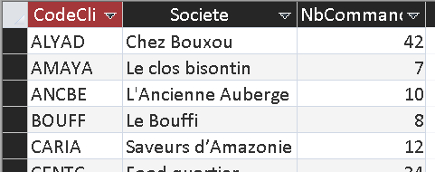
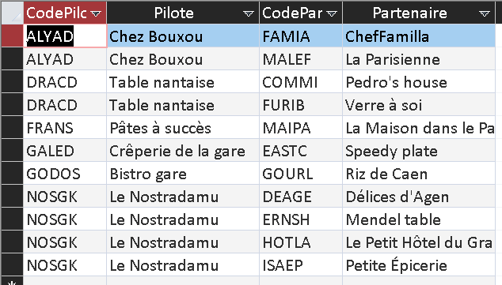
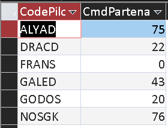
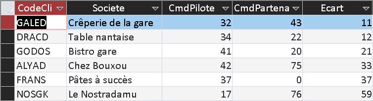
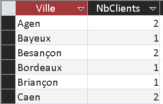
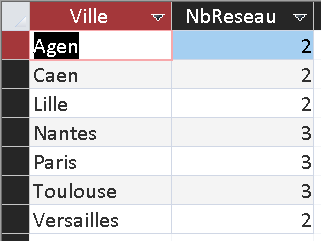
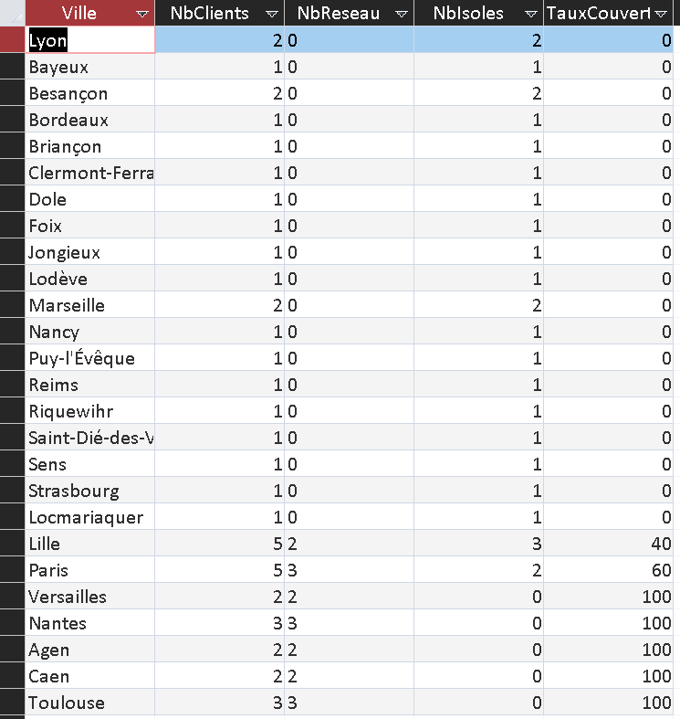

Conception - Interrogation d'une base de données
Requête 5 A-t-on des clients pilotes d'un réseau partenaire ayant autant de commandes que les clients partenaires ?
Réflexion sur le partenariat client
L'idée est de comparer le volume de commandes du pilote avec celui de son réseau. Si un pilote
reçoit un nombre similaire de commandes à celui de son réseau alors le pilote a un poids comparable
à celui de son réseau.
Si le pilote reçoit un nombre plus important de commandes que son réseau alors le réseau est
concentré sur le pilote et le groupement est intéressant pour la réduction du nombre de livraison.
Si en revanche les partenaires reçoivent plus de commandes que le pilote, le réseau n'est peut-être
pas intéressant et il faudrait envisager de changer de pilote ou d'organisation.
| Code SQL | Libellé des étapes | Resultat |
|---|---|---|
|
SELECT C.CodeCli, C.Societe, Count(Co.Ncommande) AS NbCommandes FROM Clientele AS C LEFT JOIN Commande AS Co ON C.CodeCli = Co.CodeCli GROUP BY C.CodeCli, C.Societe; |
On cherche le nombre de commandes par clients. On utilise LEFT JOIN pour avoir aussi les clients n'ayant passé aucune commande. On modifie aussi le nom de la clé primaire de la table commande de N° commande à Ncommande. |
 |
|
SELECT Pi.CodeCli AS CodePilote, Pi.Societe AS Pilote, Pa.CodeCli AS
CodePartenaire, Pa.Societe AS Partenaire FROM Clientele AS Pi INNER JOIN Clientele AS Pa ON Pi.CodeCli = Pa.CodeCliPart; |
On cherche la liste de partenaires par pilote. |
 |
|
SELECT P.CodePilote, Sum(N.NbCommandes) AS CmdPartenaires FROM PPilotePartenaire AS P INNER JOIN NbCommandesClient AS N ON P.CodePartenaire = N.CodeCli GROUP BY P.CodePilote; |
On fait la somme des commandes des partenaires dans chaque réseau. |
 |
|
SELECT CC.CodeCli, CC.Societe, CC.NbCommandes AS CmdPilote,
CP.CmdPartenaires, Abs(CC.NbCommandes - CP.CmdPartenaires) AS Ecart FROM NbCommandesClient AS CC INNER JOIN NBCommandesPartenaires AS CP ON CC.CodeCli = CP.CodePilote ORDER BY Abs(CC.NbCommandes - CP.CmdPartenaires); |
On trouve la différence entre le nombre de commandes passées par le pilote et celles passées par ses partenaires. |
 |
Analyse des résultats
On voit que les réseaux de la Crêperie de la gare (GALED) et de la
Table nantaise (DRACD) sont les plus équilibrés.
Le réseau piloté par Pâtes à succès (FRANS) est le plus concentré car son
partenaire n'a passé aucune commande.
On peut se demander si Le Nostradamu (NOSGK) est le choix le plus judicieux comme
client pilote car son nombre de commandes passées est très inférieur à celui de ses partenaires.
L'ambiguïté est de savoir si les commandes sont passées par les clients partenaires ou si elles sont passées par le client pilote pour être ensuite redistribuées. La base de données pourrait être modifiée pour préciser l'adresse de livraison.
Proposition d'indicateur : Couverture des villes de France par les réseaux
Énoncé de la requête
Quel est le niveau de couverture par réseau de partenariat pour chaque ville ?
Construction de la requête
| Requête | Fonction | Resultat |
|---|---|---|
|
SELECT Ville, Count(*) AS NbClients FROM Clientele GROUP BY Ville; |
Cette requête calcule le nombre total de clients présents dans chaque ville. |
 |
|
SELECT Ville, Count(*) AS NbReseau FROM Clientele WHERE CodeCliPart Is Not Null OR CodeCli IN (SELECT CodeCliPart FROM Clientele WHERE CodeCliPart Is Not Null) GROUP BY Ville; |
Cette requête permet d'obtenir tous les clients appartenant à un réseau. |
 |
|
SELECT V.Ville, V.NbClients, Nz(R.NbReseau,0) AS NbReseau, V.NbClients - Nz(R.NbReseau,0) AS NbIsoles, (Nz(R.NbReseau,0)*100)/V.NbClients AS TauxCouverture FROM NbClientsVille AS V LEFT JOIN NbReseauVille AS R ON V.Ville = R.Ville ORDER BY (Nz(R.NbReseau,0)*100)/V.NbClients; |
Cette requête calcule le pourcentage de clients rattachés à un réseau par ville. On utilise Nz() pour remplacer les valeurs Null par des 0. |
 |
Objectif
Cette requête permet de comparer :
- le nombre total de clients dans chaque ville ;
- le nombre de clients appartenant à un réseau partenaire ;
- le nombre de clients isolés (sans partenariat) ;
- le pourcentage de couverture du réseau dans la ville.
L'objectif final est d'identifier les villes où le partenariat est le plus développé afin de favoriser les livraisons groupées et de repérer les villes où de nombreux clients restent isolés.
Intérêt dans le contexte
KDou utilise les réseaux de partenaires pour optimiser sa logistique. Lorsqu'un client pilote réceptionne les commandes de plusieurs partenaires, plusieurs livraisons peuvent être regroupées. Cela réduit les coûts de transport, le nombre de trajets nécessaires et simplifie l'organisation des tournées de livraison.
Analyse des résultats
Les villes avec une couverture de 100 % ont l'ensemble de leurs clients appartenant à un réseau partenaire. Les villes comme Nantes et Toulouse disposent de réseaux particulièremen performants par exemple.
Les villes de Paris et Lille ont un réseau actif. Elles sont les meilleures candidates pour intégrer de nouveaux partenaires et augmenter encore les possibilités de regroupement.
Les villes avec une couverture de 0 % représentent les principaux axes d'amélioration pour réduire les coûts logistiques.